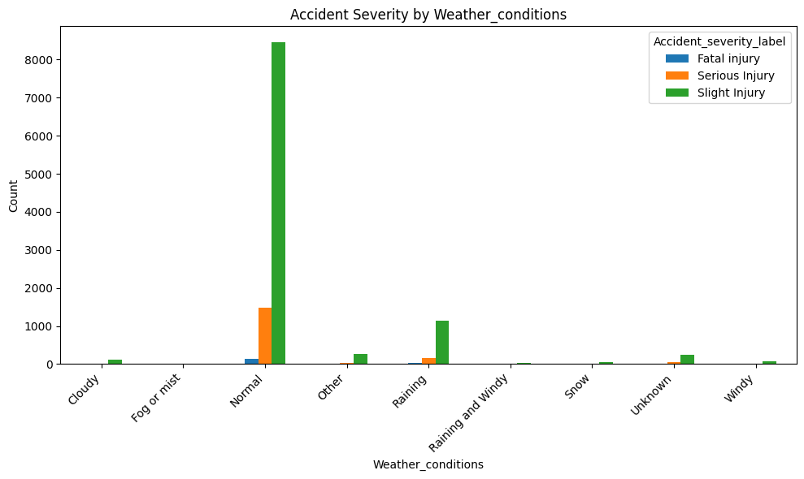
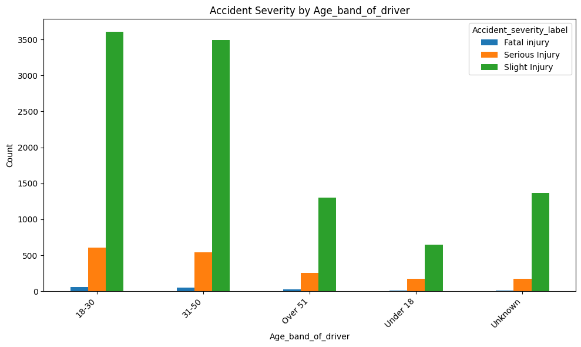
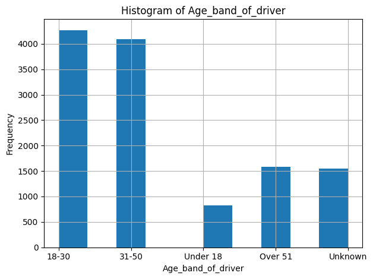

Overview
This project used Python to analyze driving accident data and produce visual summaries of key patterns in the dataset. The goal was to explore how driver age and weather conditions related to accident severity and frequency through clear, data-driven graphs.
Methods
- Obatained large driving accident dataset from Kaggle
- Wrote clean python code to clean up the dataset and perform analysis
- Grouped records by variables such as driver age band, weather conditions, and severity level.
- Created comparative plots to make trends and differences easier to interpret.
- Used graph outputs to communicate findings in a concise and readable way.
Outcome
The final visualizations highlight how accident patterns vary across demographic and environmental factors. This project demonstrates practical Python skills for cleaning data, summarizing trends, and turning raw records into informative graphics.
Driving Accident Graphs

